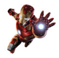

BATMAN
Bruce Wayne es el único personaje que se identifica como Batman y aparece en Batman, Detective Comics, Batman y Robin, y Batman: The Dark Knight. Dick Grayson vuelve al manto de Nightwing
Bruce Wayne es el único personaje que se identifica como Batman y aparece en Batman, Detective Comics, Batman y Robin, y Batman: The Dark Knight. Dick Grayson vuelve al manto de Nightwing


La creación de Harley Quinn fue una idea de último minuto propuesta por el escritor estadounidense Paul Dini para modificar una escena del vigésimo-segundo episodio de Batman: la serie animada

Anthony Edward "Tony" Stark fue un multimillonario industrial, anterior Director General de Industrias Stark y miembro fundador de los Vengadores. Siendo el hijo de Howard Stark y poseyendo un gran intelecto, Stark se volvió un inventor de armas mundialmente reconocido hasta que fue secuestrado por los Diez Anillos.